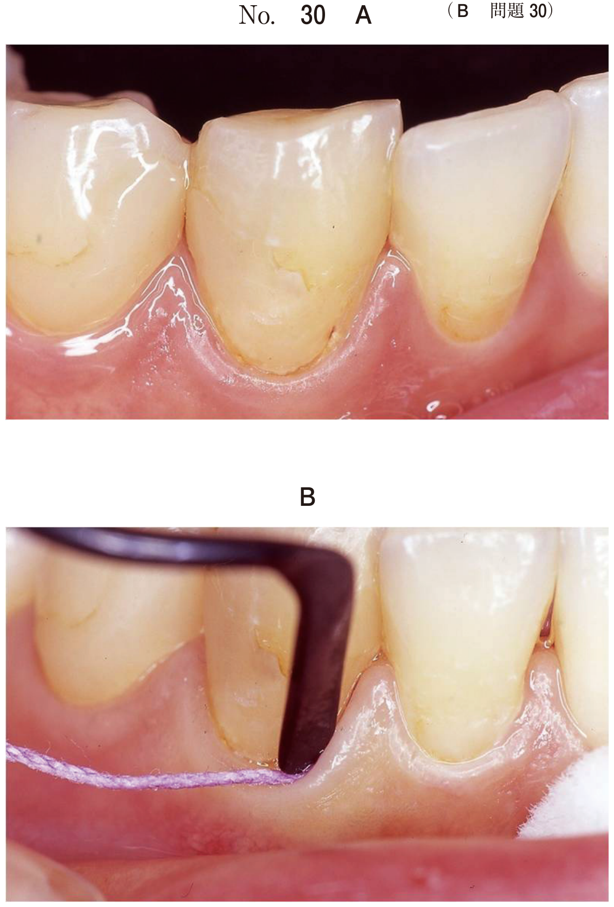
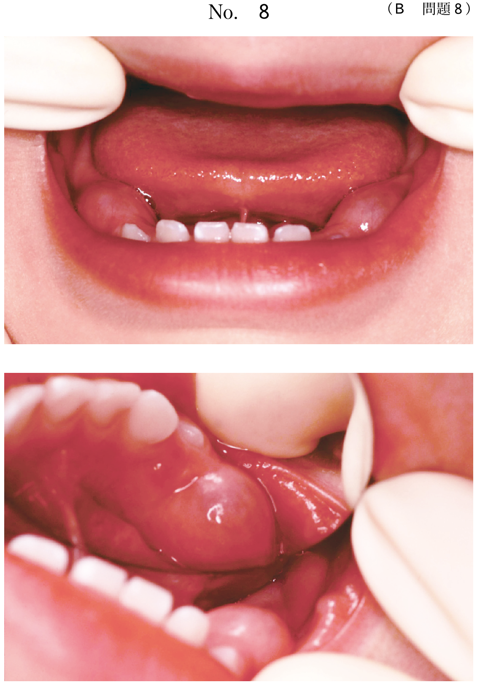

交叉咬合
交叉咬合とは
交叉咬合（crossbite）は、上下顎臼歯の頬舌的な咬合関係が正常と逆転している状態。正常では上顎臼歯が下顎臼歯の頬側に位置するが、交叉咬合では下顎臼歯が上顎臼歯の頬側に位置する。
原因
- 吸指癖：上顎歯列弓の狭窄を引き起こす
- 口呼吸：舌位の低下により上顎歯列弓が狭窄
- 上顎の劣成長
- 乳歯の早期喪失による咬合干渉
交叉咬合の分類
| 分類 | 特徴 | 治療のポイント |
|---|---|---|
| 機能性交叉咬合 | 咬合干渉により下顎が側方に偏位 → 開口時には正中が一致 |
咬合干渉の除去、上顎拡大 |
| 歯槽性交叉咬合 | 歯・歯槽骨レベルの異常 上顎臼歯の舌側傾斜 |
クワドヘリックス、緩徐拡大装置 |
| 骨格性交叉咬合 | 上顎骨の幅径不足 正中口蓋縫合の拡大が必要 |
急速拡大装置 |
- 早期治療が必要：放置すると下顎骨が非対称に成長
- 下顎の偏位 → 顔面非対称の原因となる
- 乳歯列期・混合歯列期での治療が望ましい
治療装置の選択【頻出】
| 装置 | 拡大様式 | 適応 |
|---|---|---|
| 緩徐拡大装置 | 歯槽性拡大 | 乳歯列期〜混合歯列期の機能性・歯槽性交叉咬合 |
| クワドヘリックス | 歯槽性拡大 | 混合歯列期〜永久歯列期の歯槽性交叉咬合 |
| 急速拡大装置 | 骨格性拡大（正中口蓋縫合離開） | 混合歯列期〜思春期の骨格性交叉咬合 |
装置選択の判断基準
- 骨格的問題なし → クワドヘリックス、緩徐拡大装置
- 骨格的問題あり（上顎骨幅径不足）→ 急速拡大装置
- 混合歯列期でより強力な拡大が必要 → 急速拡大装置
過去問
臼歯部交叉咬合の原因となるのはどれか。2つ選べ。
b 口呼吸
c 咬爪癖
d 弄唇癖
e 舌突出癖
【解説】吸指癖は指を吸う際の口腔内陰圧により上顎歯列弓が狭窄する。口呼吸は舌が低位となり、上顎への舌圧が減少して上顎歯列弓が狭窄する。いずれも臼歯部交叉咬合の原因となる。咬爪癖・弄唇癖は前歯部への影響、舌突出癖は開咬の原因。
10歳の女児。奥歯で食物を噛みにくいことを主訴として来院した。初診時の顔面写真（別冊No.38A）と咬頭嵌合位の口腔内写真（別冊No.38B）とを別に示す。側面セファログラム分析では骨格的な問題はない。模型分析の結果を図に示す。 混合歯列期に使用する矯正装置で適切なのはどれか。1つ選べ。

b Fränkel装置
c 急速拡大装置
d リップバンパー
e トランスパラタルアーチ
【解説】臼歯部交叉咬合で「骨格的な問題はない」とあるが、混合歯列期で上顎の側方拡大が必要な場合は急速拡大装置が第一選択となる。正中口蓋縫合が閉鎖する前であれば骨格的拡大が可能。咬合斜面板は下顎前突用、Fränkel装置は下顎前突・上顎前突用、リップバンパーは下顎叢生用。
4歳の男児。臼歯部交叉咬合を認めたため治療を行うこととした。矯正装置装着時の口腔内写真（別冊No.18）を別に示す。 保護者に説明しておくべきなのはどれか。すべて選べ。

b 矯正力付与の方法
c 口蓋正中部の疼痛
d 乳中切歯の正中離開
e 第一乳臼歯の口蓋側移動
【解説】写真から急速拡大装置が装着されている。保護者への説明事項として、a 口蓋部に装置があるため構音への影響あり、b 拡大ネジを回す方法の指導が必要、c 正中口蓋縫合の離開による口蓋正中部の疼痛、d 縫合離開による乳中切歯の正中離開が起こりうる。eは誤り（臼歯の口蓋側ではなく頬側への移動）。
5歳の女児。下顎の偏位を主訴として来院した。上下顎乳中切歯の歯軸傾斜に異常を認めない。口腔内写真（別冊No.11A）、顔面写真（別冊No.11B）及び正面セファログラム（別冊No.11C）を別に示す。セファロ分析の結果の一部を図に示す。 最初に用いる矯正装置はどれか。1つ選べ。

b 緩徐拡大装置
c タングクリブ
d チンキャップ
e 上顎前方牽引装置
【解説】下顎の偏位と片側性交叉咬合を認める症例。5歳の乳歯列期であり、緩徐拡大装置（床型拡大装置）で上顎歯列弓を拡大し、機能性の下顎偏位を改善する。咬合斜面板は下顎前突用、タングクリブは舌突出癖用、チンキャップ・上顎前方牽引装置は骨格性下顎前突用。
- 交叉咬合の原因 → 吸指癖、口呼吸（上顎狭窄）
- 骨格的問題なし + 混合歯列期 → 急速拡大装置
- 乳歯列期の機能性交叉咬合 → 緩徐拡大装置
- 急速拡大装置使用時の説明 → 構音影響、拡大方法、口蓋疼痛、正中離開
- 片側性交叉咬合 → 早期治療（下顎の非対称成長予防）
参照：06_矯正装置_拡大装置.html